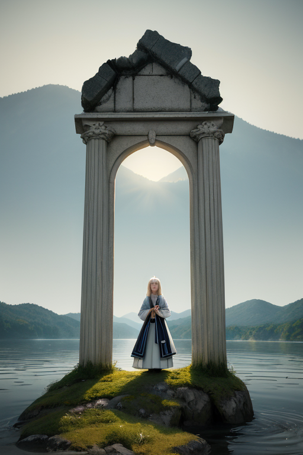
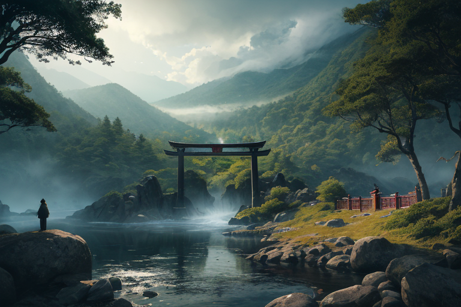
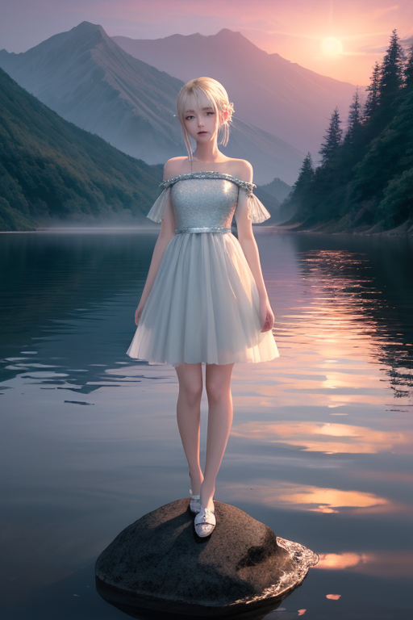
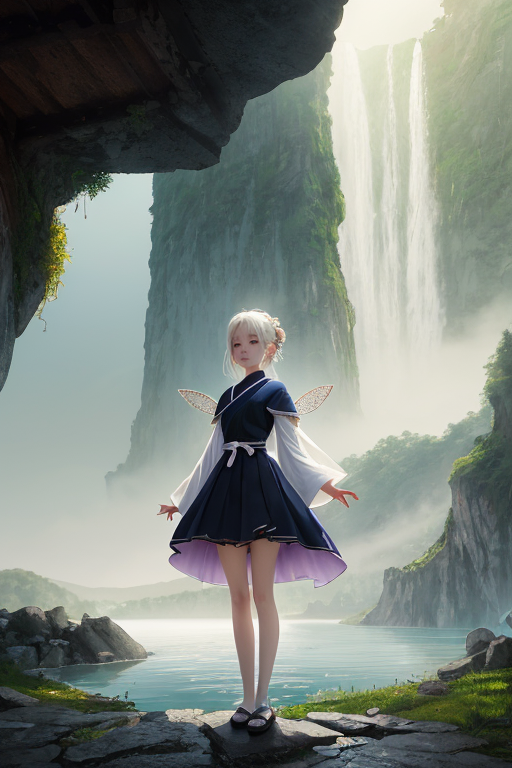

第一章「現実の栃木」
あなたはまだ気づいていない。この土地にも、王がいることを。
日光東照宮の陽明門が、朝日に金色を纏う。観光客のざわめえ、シャッター音、そして静謐な杉木立の奥に、歪みは潜む。関東平野の北端、山々が連なる境界。ここは、内と外を分かつ山境の地だ。トチギア・セラフィムは、霊峰・男体山の影に立つ。深紫と白の紋章が、その胸に微かに光る。彼の目には、この土地の地殻に走る無数の「ひずみ」の線が見えている。それは、プレートが軋み、蓄積するエネルギーの軌跡。彼の役目は、それを消すことではない。巨大な歪みが一点に集中するのを防ぎ、分散させ、ほんの少し、ほんの一瞬、その力を緩和することだ。
「歪みの集中、男体山南西斜面で確認。予測規模、Ｍ６．８。地表への影響を、一段階軽減可能です」
傍らに立つ主席妖精セラフィナが、冷徹な声で報告する。彼女の手には、この地域の守護結界を映す光の球が浮かぶ。規律と忠誠。それがこの王国の全てだった。トチギアは微かに頷く。守るべきもの。それはこの地形であり、地質であり、定められた秩序である。感情など不要だ。彼はそう信じていた。ふと、眼下の中禅寺湖の水面が、風もないのに微かに揺れた。湖面に映る山影が、一瞬、歪んだように見えた。

第二章「歪みの兆候」
中禅寺湖の水面は、風のない午後に突然、細かい皺を寄せた。それは地殻の微かな軋みではなく、外から来たものだった。トチギアは湖畔の岩場に立ち、深紫の瞳を細めた。境界線、山境。彼の王国は内と外を分ける峻厳な線で守られてきた。しかし今、その線を越えて、異質な「何か」が滲み込もうとしている。
「霊峰の波動が乱れています」
セラフィナが結界の球を示す。球の内部、日光連山を模した光の稜線に、針で突いたような小さな黒点が幾つも浮かぶ。それは痛みでもなく、悪意でもない。ただ、あまりにも「濃い」感情の残滓だった。観光客の、あるいは移住者の、強い郷愁や期待、不安が、この土地の古くからの静謐を押しのけようとしていた。
トチギアは規律に則り、歪みを調整する術を探った。しかし、彼の術は物理的な地殻変動を緩和するためのものだ。人々の心が織りなすこの新しい「地鳴り」を、どう整えればよいのか。足利学校の遺跡を思った。かつてここに集った学問も、外から来た知恵が、内なる静けさを揺るがすものだったのか。
守るべきものは、変わらぬ山の形だけなのか。彼は初めて、自問した。

第三章 王の葛藤
日光東照宮の陽明門は、極彩色に輝いていた。訪れる人々のざわめきは、かつてないほど活気に満ち、トチギアには騒音としか聞こえなかった。彼は境内の片隅、静寂を保つ本地堂の前に立っていた。ここには、秘仏・千手観音が安置されている。外の喧噪と、内の静寂。その境界に立つ王は、自らの役割に疑念を抱き始めていた。
「殿下、観光客の増加は、地元経済の活性化です。歪みではありません」
セラフィナが淡々と報告する。彼女の言う通り、これは災害ではない。人々の営みそのものだ。しかし、トチギアは感じていた。山々の精気が、あまりに濃密な人間の「感情」に圧され、かすかに震えているのを。華厳の滝の轟音の中にさえあった清冽な気配が、薄れていくような気がした。
守るべきものは何か。山の静寂か、人の賑わいか。彼はどちらもこの土地の「かたち」だと知っていた。拒むことも、そのまま受け入れることも、ただの規律違反に思えた。彼は深紫の翼をわずかに震わせた。感情という名の、新たな歪みが、彼自身の内側で微かにうごめいていた。

第四章 妖精との対話
中禅寺湖の水面は、夕陽を深紫に溶かし込んでいた。セラフィナは岸辺に立ち、揺らぐ光を無言で見つめていた。王が近づいても、彼女は振り向かなかった。
「この湖は、鏡です」彼女の声は水のように冷たかった。「山の姿を映し、空の色を写す。しかし、それは決して、それらそのものではない。境界です。内なる山と、外なる世界との」
王は彼女の横に並んだ。湖面に映る男体山は、実体よりも柔らかく、哀しげに見えた。
「我々も同じです」セラフィナは続けた。「王とこの地を繋ぐ境界。星の意思を伝え、地の歪みを星へと還す。それが我々の役目でした」
「だった、と？」
セラフィナは初めて王を見た。彼女の目には、厳格さの奥に、かすかな逡巡が浮かんでいた。「境界であるものは、いつか、どちらかの側に引き寄せられる時が来ます。星か、地か。この土地の『感情』は、あまりに濃い。学び舎（足利学校）で培われた知の熱、霊廟（日光東照宮）に籠められた畏敬、温泉街のくつろぎ…それら全てが、我々という境界を浸していく」
彼女は湯葉のように薄く、悲しげな微笑を浮かべた。「守護とは、境界を保つこと。しかし、守るべきものが境界の両側に広がる時、王よ、あなたはどちらを選びますか」
湖面の紫が、夜の闇に飲み込まれていった。

第五章 微調整と余韻
中禅寺湖の岸辺で、トチギア・セラフィムは立っていた。朝靄が湖面を覆い、遠く華厳の滝の轟きがかすかに届く。彼は今、一つの微調整を行ったばかりだった。那須高原を南下する湿った空気の流れを、ほんの少し西へそらすことで、集中豪雨の危険を分散させた。消せない雨を、ただ場所をずらすだけの仕事だ。
足を運んだ先は、古びた学び舎の跡。足利学校の庭で、いちごを頬張る子供たちの笑い声が聞こえる。彼はかつて、この地に流れる「知」の波動を安定させるためだけに存在した。境界を守る者。しかし今、彼は知っている。守るべきは、この境界そのものではない。境界の内側にある歴史の重みでも、外側にある新たな命の賑わいでもない。その狭間で生まれる、静かな邂逅の瞬間そのものなのだ。
餃子の焼ける匂いが漂う路地を、彼は無色の観光客として歩く。日光彫りの職人が鑿を動かす音、温泉から上がった人々の緩んだ会話。これら全てが、この土地の「感情」であり、歪みを生み、また癒す源泉である。
彼はもう、忠誠の対象を問わない。ただ、この一瞬の平穏が、次の一瞬へと紡がれていくよう、目に見えぬ翼を広げて調整を続ける。
あなたの町にも、王がいる。